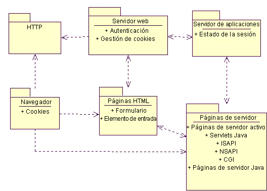
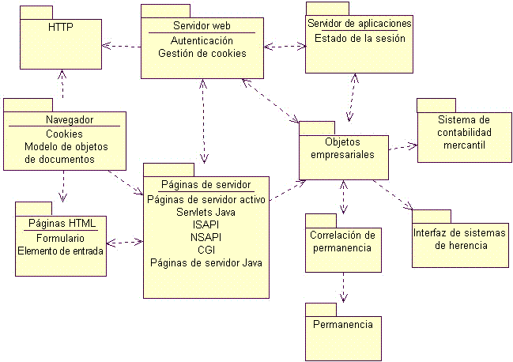
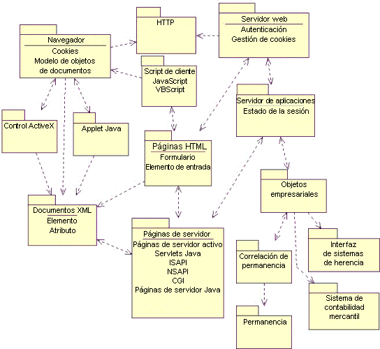
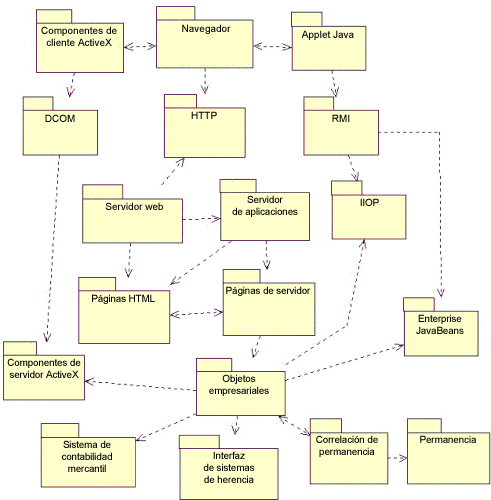

| Concepto: Patrones de arquitectura web |
 |
|
| Elementos relacionados |
|---|
IntroducciónLos tres patrones más comunes son: Cliente web fino: se utiliza principalmente para aplicaciones basadas en Internet, donde hay poco control de la configuración del cliente. El cliente sólo requiere un navegador web estándar (que admita formularios). Toda la lógica empresarial se ejecuta en el servidor. Cliente web grueso: se ejecuta una cantidad arquitectónicamente significativa de lógica empresarial en la máquina del cliente. Normalmente, el cliente utiliza HTML dinámico, applets Java o controles ActiveX para ejecutar la lógica empresarial. La comunicación con el servidor se realiza mediante HTTP. Entrega web: además de utilizar el protocolo HTTP para la comunicación del cliente y el servidor, se pueden utilizar otros protocolos como IIOP y DCOM para dar soporte al sistema de objetos distribuidos. El navegador web actúa principalmente como dispositivo contenedor y de entrega para un sistema de objetos distribuidos. Esta lista no se puede considerar completa, especialmente en una industria en la que se producen revoluciones tecnológicas anualmente. Representa, a un nivel elevado, los patrones de arquitectura más comunes de aplicaciones web. Al igual que cualquier patrón, se puede concebir para aplicar varios patrones a una sola arquitectura. Cliente web finoEl patrón de arquitectura de cliente web fino es útil para aplicaciones basadas en Internet, para las que sólo se puede garantizar la configuración de cliente mínima. Toda la lógica empresarial se ejecuta en el servidor durante el cumplimiento de las solicitudes de la página para el navegador del cliente. AplicabilidadEste patrón es más adecuado para aplicaciones web basadas en Internet o para los entornos en los que el cliente tiene una capacidad de cálculo mínima o no tiene control sobre su configuración. Usos conocidosLa mayoría de las aplicaciones de comercio electrónico de Internet utilizan este patrón, puesto que, empresarialmente, no tiene sentido eliminar ningún sector de clientes simplemente porque no tenga las suficientes capacidades de cliente. Una aplicación de comercio electrónico típica intenta llegar al mayor número de clientes posible; después de todo, el dinero de un usuario de Commodore Amiga es tan bueno como el de un usuario de Windows NT. EstructuraEn el servidor, se encuentran los principales componentes del patrón de arquitectura de cliente web fino. Esta arquitectura representa, en muchos aspectos, la arquitectura de aplicación web mínima. Los componentes principales son los siguientes: Navegador del cliente: cualquier navegador HTML que admita formularios. El navegador actúa como un dispositivo de interfaz de usuario generalizado. Cuando se utiliza en una arquitectura de cliente web fino, el único servicio que proporciona es la capacidad de aceptar y devolver cookies. El usuario de la aplicación utiliza el navegador para solicitar páginas web: ya sean HTML o del servidor. La página que devuelve contiene una interfaz de usuario con formato completo (controles de entrada y texto) que se visualiza mediante el navegador en la pantalla del cliente. Todas las interacciones del usuario con el sistema se realizan a través del navegador. La figura de abajo muestra un diagrama de la vista lógica de la arquitectura de cliente web fino.  Arquitectura mínima de cliente web fino A la arquitectura mínima de cliente web fino le faltan algunos componentes opcionales comunes que se suelen encontrar en las aplicaciones web, por ejemplo, la base de datos. La mayoría de las aplicaciones web utilizan una base de datos para que los datos empresariales sean permanentes. En algunos casos, la base de datos también se pueden utilizar para almacenar las páginas (sin embargo, este uso de la base de datos representa un patrón de arquitectura diferente). Puesto que las aplicaciones web pueden utilizar una serie de tecnologías para que los datos empresariales sean permanentes, el componente de la arquitectura se etiqueta con el término más genérico: Permanencia. El componente de permanencia también incluye la posible utilización de un supervisor de procesos de transacción (TPM). La manera más sencilla de conectar una base de datos al sistema es permitir que los scripts de las páginas del servidor dirijan el acceso al componente de permanencia. Este acceso directo también utiliza bibliotecas de acceso de datos estándar como RDO, ADO, ODBC, JDBC, DBLib, etc. para hacer el trabajo sucio. En esta situación, las páginas del servidor conocen el esquema de base de datos. Para sistemas de base de datos relacional, construyen y ejecutan las sentencias SQL necesarias para obtener acceso a los datos en la base de datos. En aplicaciones web menos complicadas y más pequeñas esto puede ser suficiente. Sin embargo, en sistemas más fuertes y grandes, es preferible utilizar una capa completa de objeto empresarial. Un componente de objeto empresarial encapsula la lógica empresarial. Este componente suele compilarse y ejecutarse en el servidor de aplicaciones. Una de las ventajas de tener un componente arquitectónico de objeto empresarial es que otros sistemas de servidor web o de cliente pueden utilizar los mismos componentes para invocar a la misma lógica empresarial. Por ejemplo, una tienda cibernética basada en Internet puede utilizar páginas de servidor y el patrón de arquitectura del cliente web fino para todas las actividades del cliente; sin embargo, el departamento de facturación puede requerir un acceso más sofisticado a los datos y a la lógica empresarial y preferir utilizar un sistema de servidor de cliente en vez de uno basado en web. El sistema del departamento de facturación puede utilizar los mismos componentes empresariales en el mismo servidor de aplicaciones que la web, pero utilizar su propio software de cliente más sofisticado. Puesto que las bases de datos relacionales son el tipo más común de base de datos en las empresas habituales, suele haber un componente de arquitectura adicional entre el servidor de aplicaciones y la base de datos. Este componente proporciona un servicio de correlación entre los objetos y las bases de datos relacionales. Esta capa de correlación se puede implementar de varias maneras. El objetivo de esta página no es proporcionar una descripción detallada de este componente. Otras opciones que se suelen añadir a este patrón de arquitectura son la integración con sistemas heredados y aplicaciones de comercio electrónico; un sistema de contabilidad mercantil. Se puede acceder a las dos opciones mediante los objetos empresariales (o el servidor de aplicaciones en los sistemas que no tienen un componente de objeto empresarial formal). Los sistemas heredados podrían representar un sistema de contabilidad o un sistema de planificación de la fabricación. El sistema de contabilidad mercantil permite que una aplicación web de Internet acepte y procese pagos con tarjeta de crédito. Hay varios sistemas de contabilidad mercantil disponibles para empresas pequeñas que quieren introducirse en el mercado en línea. Para empresas más grandes, lo más probable es que este componente sea una interfaz de un sistema existente que puede procesar solicitudes de tarjetas de crédito. Con estos componentes opcionales, la vista lógica del patrón de arquitectura del cliente web fino es más completa. La vista lógica se muestra en la figura siguiente.  Vista lógica del cliente web fino Muchos de los componentes del servidor de aplicaciones web también se pueden encontrar en aplicaciones que no están basadas en web. El diseño y la arquitectura del fondo de una aplicación web no son diferentes al diseño de cualquier sistema principal o sistema de cliente/servidor. Las aplicaciones web utilizan los supervisores de procesos de transacción (TPM) y las bases de datos por los mismos motivos que los otros sistemas. Enterprise Java Beans (EJB) y Microsoft's Transaction Server (MTS) son herramientas y tecnologías nuevas que se introdujeron con las aplicaciones web en mente, pero que también son adecuadas en otras arquitecturas de aplicaciones. La arquitectura y el diseño de los componentes del servidor de una aplicación web se tratan exactamente de la misma manera que el sistema de un servidor de cliente. Dado que este patrón de arquitectura se centra en la web y los componentes específicos de aplicaciones web, una revisión detallada de las posibles arquitecturas de servidor de fondo está lejos del ámbito de este patrón. DinámicaEl principal subyacente de la dinámica de este patrón de arquitectura es que la lógica empresarial sólo se ejecuta como respuesta a una solicitud de página web del cliente. Los clientes utilizan el sistema solicitando páginas web desde el servidor web con el protocolo HTTP. Si la página solicitada es un archivo HTML del sistema de archivos del servidor web, simplemente lo busca y se lo devuelve al cliente que solicitó la página. Si se trata de una página con scripts, es decir, una página con código interpretable que debe procesarse antes de devolverla al cliente, el servidor web delega esta acción en el servidor de aplicaciones. El servidor de aplicaciones interpreta los scripts de la página y, si se dirigen a él, interactúa con los recursos del servidor, como bases de datos, servicios de correo electrónico, sistemas heredados, etc. El código con scripts tiene acceso, mediante la aplicación y el servidor web, a información especial adjunta a la solicitud de página. Esta información incluye valores de campos de formulario que especificó el usuario y parámetros agregados a la solicitud de página. El resultado final es una página HTML con un formato correcto y apropiada para devolver al cliente. La página también puede ser un módulo ejecutable como ISAPI o NSAPI DLL. Una biblioteca de enlaces dinámicos o DLL es una biblioteca compilada que puede cargar y ejecutar en tiempo de ejecución el servidor de aplicaciones. El módulo tiene acceso a los mismos detalles de la solicitud de página (parámetros y valores de campos de formulario) que las páginas con scripts. El punto clave del comportamiento dinámico de este patrón es que la lógica empresarial sólo se invoca durante el proceso de una solicitud de página. Una vez que se ha completado la solicitud de página, el resultado se devuelve al cliente que la solicita y se finaliza la conexión entre el cliente y el servidor. Un proceso empresarial puede perdurar después de que se haya completado la solicitud, pero no es la norma. ConsecuenciasEste tipo de arquitectura se adapta mejor a las aplicaciones con respuestas de servidor que se pueden completar en el tiempo de respuesta aceptable para el usuario (y en el valor de tiempo de espera excedido que permite el navegador del cliente). Esto suele no suele tardar más que unos cuantos segundos. Puede que este no sea el patrón de arquitectura más apropiado si la aplicación debe permitir al usuario iniciar y supervisar un proceso empresarial que dure mucho tiempo. No obstante, las tecnologías push se pueden utilizar para permitir al cliente supervisar los procesos que llevan tiempo ejecutándose. Por lo general, las tecnologías push sólo utilizan sondeos periódicos del servidor. Otra de las consecuencias principales de este patrón de arquitectura es la capacidad limitada para interfaces de usuario sofisticadas. Dado que el navegador actúa como mecanismo de entrega de la interfaz de usuario completa, todos los objetos gráficos y controles de la interfaz de usuario deben estar disponibles en el navegador. En los navegadores más comunes, y en las especificaciones HTML, están limitados a unos cuantos botones y campos de entrada de texto. Por otro lado, se puede argumentar que una interfaz de usuario muy limitada es un plus. Si hay pocas ofertas de interfaces de usuario, se evita que el equipo de desarrollo invierta esfuerzo en interfaces "bonitas" y "nítidas", bastará con interfaces más simples. Cliente web gruesoEl patrón de arquitectura de cliente web grueso amplía el patrón de cliente web fino con la utilización de objetos personalizados y de creación de scripts del cliente como controles ActiveX y applets Applets. El nombre del patrón de cliente web grueso se debe al hecho de que el cliente puede ejecutar parte de la lógica empresarial del sistema y, por lo tanto, pasa a ser algo más que un contenedor de interfaces de usuario personalizadas. AplicabilidadEl patrón de arquitectura de cliente web grueso es más adecuado para aplicaciones web que pueden asumir una configuración de cliente y una versión de navegador determinadas, preferiblemente una interfaz de usuario sofisticada, y/o pueden ejecutar cierta cantidad de lógica empresarial en el cliente. Una de las diferencias entre los patrones de cliente web fino y de cliente web grueso es el papel que desempeña el navegador en la ejecución de la lógica empresarial del sistema. Los dos motivos principales para utilizar el cliente web grueso son una capacidad de interfaz de usuario mejorada y la ejecución de la lógica empresarial por parte del cliente. Se podría utilizar una interfaz de usuario sofisticada para ver y modificar tres modelos dimensionales o animar un gráfico financiero. En algunos casos, el control ActiveX se puede utilizar para la comunicación con el equipo de supervisión del cliente. Por ejemplo, un equipo de asistencia sanitaria que mida la tensión arterial, la cantidad de azúcar en sangre y otros signos vitales puede ser útil para una agencia que tenga que controlar geográficamente a pacientes remotos diariamente y quiera reducir las visitas personales a dos a la semana. En algunas situaciones, la lógica se puede ejecutar sólo en el cliente. En este caso, los datos necesarios para llevar a cabo el proceso deben estar disponibles en el cliente. La lógica puede ser tan simple como validar los datos especificados. Se puede comprobar la precisión de las fechas o se pueden comparar con otras fechas (por ejemplo, la fecha de nacimiento debe ser anterior a la fecha de admisión en el hospital). Según las reglas empresariales del sistema, algunos campos estarán activados o desactivados en función de los valores especificados actualmente. Usos conocidosEl uso más evidente de los scripts, applets, controles y plug-ins del cliente son las interfaces de usuario mejoradas en Internet. Los scripts de Java suelen utilizarse para cambiar el color o la imagen de un botón o elemento de menú de las páginas HTML. Los applets de Java y los controles ActiveX suelen utilizarse para crear controles sofisticados de vistas de árbol jerárquicas. El plug-in y control Shockwave ActiveX es uno de los componentes de interfaz de usuario más comunes en Internet actualmente. Admite animaciones interactivas y se utiliza principalmente para dar vida a sitios de Internet con gráficos atractivos, pero también se utiliza para visualizar simulaciones y controlar sucesos deportivos. Varios sitios de Internet utilizan el control de agentes de Microsoft para aceptar mandatos de voz y ejecutar acciones en el navegador que ayuden al usuario a navegar por el sitio web. Fuera de Internet, un empresa de software de asistencia médica desarrolló una aplicación de intranet basada en web para gestionar la facturación y los registros del paciente. La interfaz de usuario basada en web utiliza mucho los scripts del cliente para efectuar validaciones de datos y ayudar al usuario a navegar por el sitio. Además de scripts, la aplicación utiliza varios controles ActiveX para gestionar el contenido XML, que se utiliza como esquema de codificación principal de información. EstructuraToda la comunicación entre el cliente y el servidor, como en el patrón de cliente web fino, se realiza mediante HTTP. Puesto que HTTP es un tipo de protocolo "sin conexión", la mayoría de las veces no hay una conexión abierta entre el cliente y el servidor. El cliente sólo envía información durante las solicitudes de página. Esto significa que la creación de scripts en el lado del cliente, los controles ActiveX y los applets Java se limitan a interactuar con objetos únicamente en el cliente. El patrón de cliente web grueso utiliza ciertas capacidades del navegador, como controles ActiveX o applets Java para ejecutar la lógica empresarial en el cliente. Los controles ActiveX son programas ejecutables binarios compilados que se pueden descargar en el cliente mediante HTTP y los invoca el navegador. Dado que los controles ActiveX son básicamente objetos COM, controlan totalmente los recursos del cliente; pueden interactuar tanto con el navegador como con el sistema del cliente. Por este motivo, los controles ActiveX, sobre todo los de Internet, suele "autenticarlos" un tercero de confianza. Las versiones más recientes de los navegadores HTML comunes admiten los scripts del cliente. Las páginas HTML se pueden incorporar en scripts escritos en Java Script o VB Script. Esta capacidad de creación de scripts permite que el navegador ejecute (o, mejor, interprete) código que puede formar parte de la lógica empresarial del sistema. El término "quizás" se utiliza porque es muy común que los scripts del cliente sólo contribuyan a aspectos extraños de la interfaz de usuario, y no formen parte de la lógica empresarial. En cualquier caso, hay elementos que pueden ser arquitectónicamente significativos (es decir, scripts) incorporados en páginas HTML que deben expresarse de esta manera. Puesto que el patrón de cliente web grueso no es más que una ampliación del patrón de cliente web fino, la mayoría de los elementos arquitectónicamente significativos son los mismos. Los elementos adicionales que introduce el patrón de cliente web grueso son:
La figura de abajo muestra un diagrama de la vista lógica de la arquitectura de cliente web grueso.  Vista lógica del patrón de arquitectura del cliente web grueso DinámicaLa dinámica principal del patrón de cliente web grueso incluye la del patrón de cliente web fino y la capacidad para ejecutar la lógica empresarial en el cliente. Igual que en el patrón de cliente web fino, toda la comunicación entre el cliente y el servidor se realiza durante las solicitudes de página. Sin embargo, la lógica empresarial se puede ejecutar parcialmente en el cliente con scripts, controles o applets. Cuando se envía una página a un navegador de cliente, puede contener scripts, controles y applets. Estos se pueden utilizar simplemente para mejorar la interfaz de usuario o para contribuir a la lógica empresarial. La lógica empresarial más sencilla utiliza validaciones de campo. Los scripts de cliente se pueden utilizar para buscar entradas válidas, no en un solo campo, sino en todos los campos de una página web dada. Por ejemplo, una aplicación de comercio electrónico que permita a los usuarios configurar sus sistemas informáticos puede utilizar scripts para evitar que se especifiquen opciones incompatibles. Para que se utilicen los applets Java y los controles ActiveX, deben especificarse en el contenido de la página HTML. Estos controles y applets pueden utilizarse independientemente de los scripts de la página o pueden estar dirigidos por los scripts de la página. Los scripts de una página HTML pueden responder a sucesos especiales que envía el navegador. Estos sucesos pueden indicar que el navegador acaba de terminar la descarga de la página web o que el ratón del usuario acaba de pasar por una región específica de la página. Estos elementos tienen acceso a la interfaz de Modelo de objetos de documentos (DOM) del navegador. Esta interfaz es un estándar W3C para proporcionar a los scripts, los controles y los applets acceso al navegador y al contenido HTML de las páginas. La implementación de Microsoft y Netscape de este modelo es Dynamic HTML (DHTML). DHTML es algo más que una simple implementación de la interfaz DOM, incluye sucesos que, cuando se escribió esta documentación, no formaban parte de la especificación DOM de nivel 1. En el centro del Modelo de objetos de documentos hay un conjunto de interfaces que manejan específicamente documentos XML. XML es un lenguaje flexible que permite a los diseñadores crear etiquetas con el objetivo que deseen. La interfaz DOM permite que los scripts de cliente accedan a documentos XML La utilización de XML como un mecanismo estándar de intercambio de información entre el cliente y el servidor se habilita mediante el uso de componentes especiales en el cliente. Los controles ActiveX y los applets Java se pueden colocar en el cliente para que solicite y envíe documentos XML de manera independiente. Por ejemplo un applet Java incorporado en una página HTML podría realizar una solicitud HTTP del servidor web para un documento XML. El servidor web encuentra y procesa la información solicitada y devuelve un documento con formato XML, no HTML. El applet que continúa ejecutándose en la página HTML del cliente acepta el documento XML, lo analiza e interactúa con el documento HTML que se encuentra en el navegador actualmente para mostrar su contenido al usuario. Toda la secuencia se produce en el contexto de una sola página HTML en el navegador del cliente. ConsecuenciasSin duda, la consecuencia más importante de este patrón es la portabilidad en las implementaciones del navegador. No todos los navegadores HTML soportan Java Script o VirtualBasic Script. Además, sólo los clientes basados en Microsoft Windows pueden utilizar controles ActiveX. Incluso si se utiliza exclusivamente una marca específica de navegador de cliente, hay diferencias sutiles en las implementaciones del Modelo de objetos de documentos. Cuando se utilizan scripts, controles o applets del cliente, el equipo de prueba debe llevar a cabo el conjunto completo de casos de ejemplo de prueba para cada configuración de cliente que se debe soportar. Dado que la lógica empresarial crítica se ejecuta en el cliente, es importante que se comporte de manera coherente y correcta en todos los navegadores implicados. No presuponga nunca que todos los navegadores se comportan de la misma manera. Es posible que navegadores diferentes se comporten de manera diferente con el mismo código fuente, pero también es posible que el mismo navegador ejecutado en sistemas operativos diferentes muestre un comportamiento anómalo. Entrega webEl patrón de arquitectura de entrega web se llama así porque la web se utiliza principalmente como un mecanismo de entrega para un sistema de cliente/servidor de objetos distribuidos tradicionales. Desde un punto de vista, este tipo de aplicación es realmente una aplicación de cliente/servidor de objetos distribuidos que incluye un navegador de cliente y servidor web como elementos arquitectónicos significativos. Independientemente de si este sistema es una aplicación web con objetos distribuidos o un sistema de objetos distribuidos con elementos web, el sistema final es el mismo. El hecho de que estos dos puntos de vista pertenezcan al mismo sistema, y los sistemas de objetos distribuidos se hayan considerado siempre sistemas que requieren un modelado delicado, enfatiza el tema de que las aplicaciones web deben modelarse y diseñarse igual que cualquier otro sistema de software. AplicabilidadEl patrón de arquitectura de entrega web es más adecuado cuando hay un control significativo sobre las configuraciones de red y el cliente. Este patrón no es especialmente adecuado para aplicaciones basadas en Internet, donde hay muy poco o ningún control sobre las configuraciones de cliente, o cuando las configuraciones de red no son fiables. El punto más fuerte de esta arquitectura es su capacidad para promover los objetos empresariales existentes en el contexto de una aplicación web. Si es posible la comunicación directa y permanente entre el cliente y el servidor, se pueden superar las limitaciones de los dos patrones de aplicación web anteriores. Se puede alentar al cliente para que ejecute la lógica empresarial significativa en un grado todavía mayor. Es poco probable que este patrón de arquitectura se utilice de forma aislada; lo normal es combinarlo con uno o los dos patrones anteriores. El sistema típico utilizaría uno o los dos primeros patrones de arquitectura para las partes del sistema que no requieren una interfaz de usuario sofisticada o donde las configuraciones de cliente no sean lo suficientemente fuertes para dar soporte a una aplicación de cliente grande. Usos conocidosEl sitio web de CNN Interactive es uno de los sitios de noticias más ocupados de la red. La mayoría del acceso público se hace con navegadores convencionales y HTML 3.2 sencillo; pero, tras el sitio web, se esconde una sofisticada red basada en CORBA de navegadores, servidores y objetos distribuidos. Un estudio de guión de este sistema se publicó en Distributed Computing. Una empresa de software de asistencia médica creó una aplicación web para gestionar la facturación y los registros de los pacientes. Los aspectos de facturación del sistema sólo los utiliza una proporción muy pequeña de la comunidad de usuarios general. Gran parte de los sistemas de facturación heredados se escribieron en FoxPro. El nuevo sistema basado en web mejoró el código heredado de FoxPro y, mediante la utilización de algunos programas de utilidad de conversión, construyó documentos ActiveX para la interfaz de usuario y la lógica empresarial. El sistema resultante es una aplicación web basada en el cliente web grueso para los registros de pacientes, integrada con una aplicación web basada en la entrega web para las operaciones de facturación. EstructuraLa diferencia más significativa entre la entrega web y los demás patrones de arquitectura de la aplicación web es el método de comunicación entre el cliente y el servidor. En los demás patrones, el mecanismo principal era HTTP, un protocolo sin conexión que limita mucho al diseñador en lo que se refiere a la actividad interactiva entre el usuario y el servidor. Los elementos arquitectónicamente significativos del patrón de entrega web son todos los especificados en el patrón de cliente web fino más los siguientes elementos adicionales:
La figura siguiente muestra un diagrama de la vista lógica del patrón de arquitectura de entrega web.  Vista lógica del patrón de arquitectura de entrega web DinámicaLa dinámica principal del patrón de arquitectura de entrega web es la utilización del navegador para entregar un sistema de objetos distribuidos. El navegador se utiliza para contener una interfaz de usuario y algunos objetos empresariales que se comunican, independientemente del navegador, con objetos del nivel de servidor. Las comunicaciones entre los objetos de servidor y de cliente se producen con protocolos IIOP, RMI y DCOM. La ventaja principal de utilizar un navegador web en este sistema servidor de cliente de objetos distribuidos es que el navegador tiene ciertas capacidades incorporadas para descargar automáticamente los componentes necesarios del servidor. Un sistema completamente nuevo en la red sólo necesita un navegador web compatible para empezar a utilizar la aplicación. No es necesario instalar manualmente el software especial en el cliente, ya que el navegador lo hará por el usuario. Los componentes se entregan y se instalan en el cliente según sea necesario. Tanto los applets Java como los controles ActiveX se pueden enviar automáticamente y guardar en la antememoria del cliente. Cuando se activan estos componentes (como resultado de cargar la página web adecuada), pueden establecer una comunicación asíncrona con los objetos del servidor. ConsecuenciasSin duda, la consecuencia más importante de este patrón es la portabilidad en las implementaciones del navegador. La utilización de este patrón requiere una red sólida. Las conexiones entre los objetos de cliente y de servidor duran mucho más que las conexiones HTTP, igual que la pérdida esporádica de servidor, que no supone un problema con las otras dos arquitecturas, y es un problema grave que se debe manejar en este patrón. |
© Copyright IBM Corp. 1987, 2006. Reservados todos los derechos. |